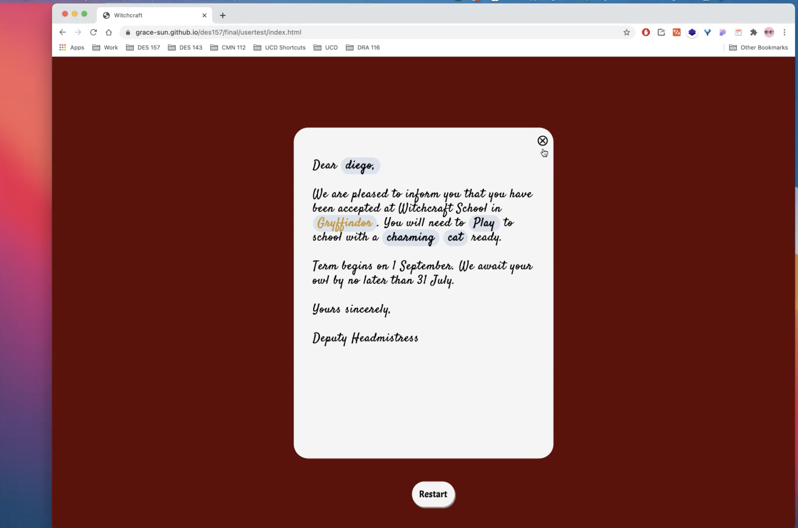
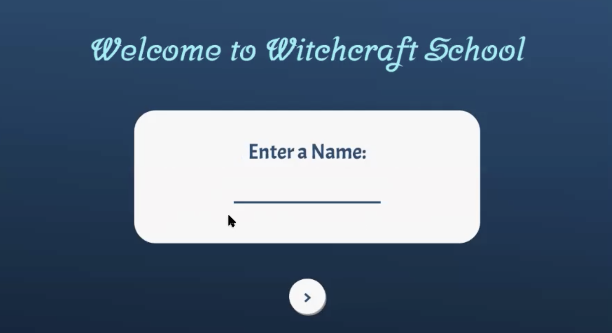
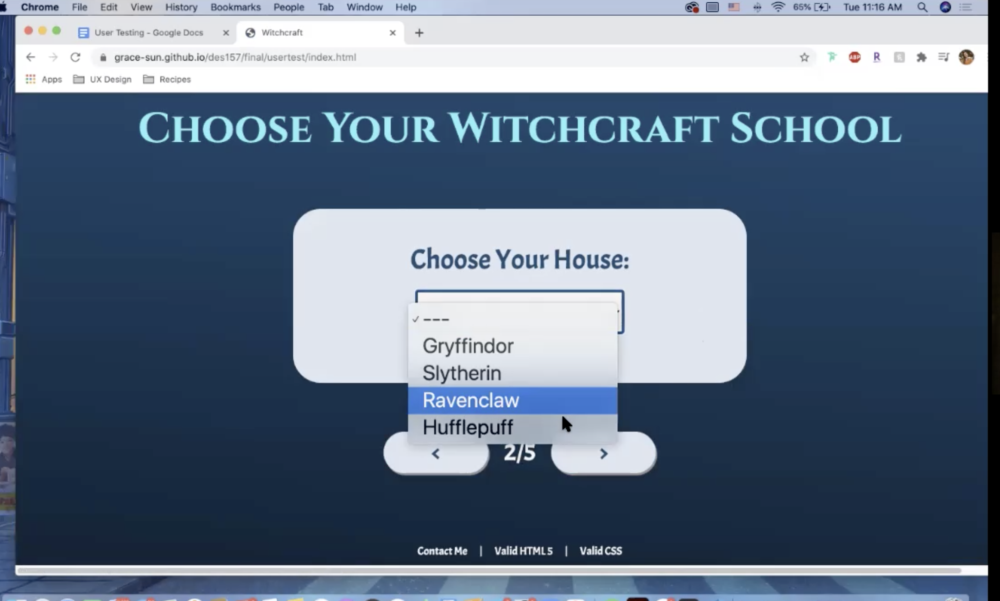

Significant Observations
Overall, the users feel confident that the direction that guided through the page is easy to follow, and it is easy to go back to fix the mistake that they make in the earlier page. However, there are some significant observations that they realized while testing which can improve the website:
- The first thing that two of my users mentioned is that on the finished page, I have put a close corner button as well as a quit button at the same time which does the same things. However, this caused destruction since the users were confused if they do different things but eventually they all load the page. 
- The color scheme of the input page could be something more neutral because the blue color is too similar to Ravenclaw’s color that they did not even notice the difference until they tried out the other houses 
- The style of the dropdown select button can be improved to match the whole theme better. 